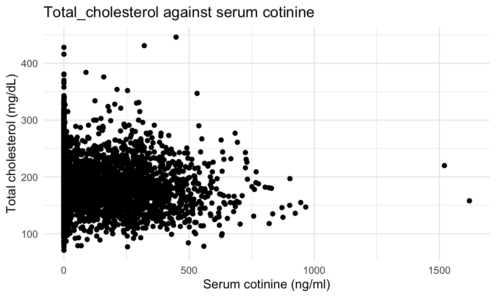
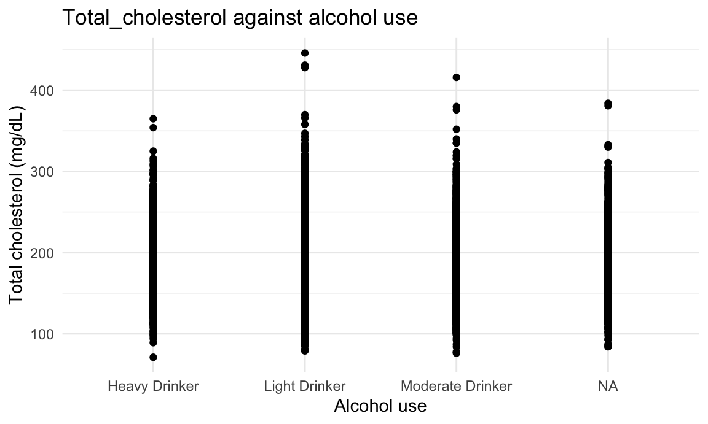
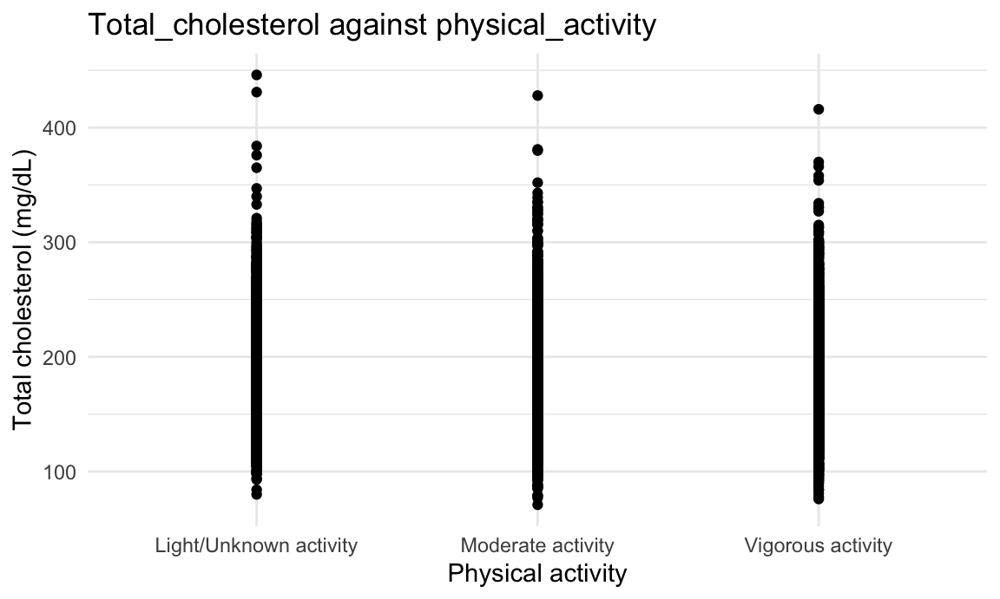
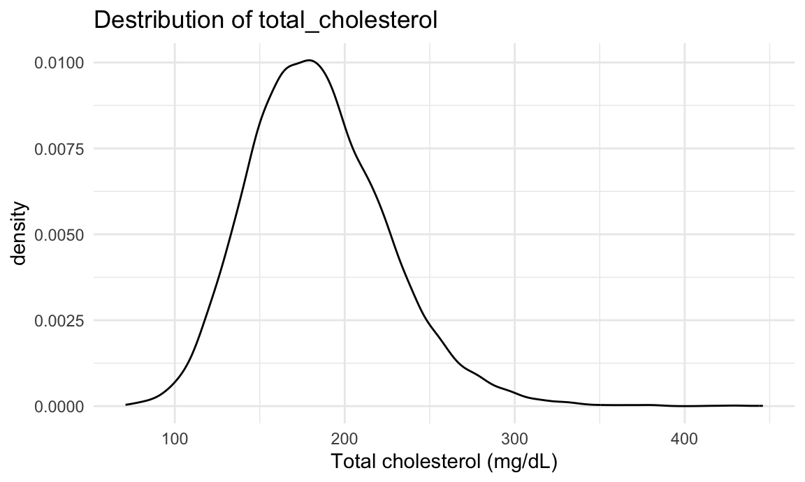
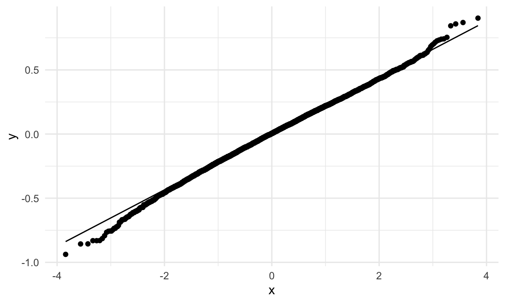
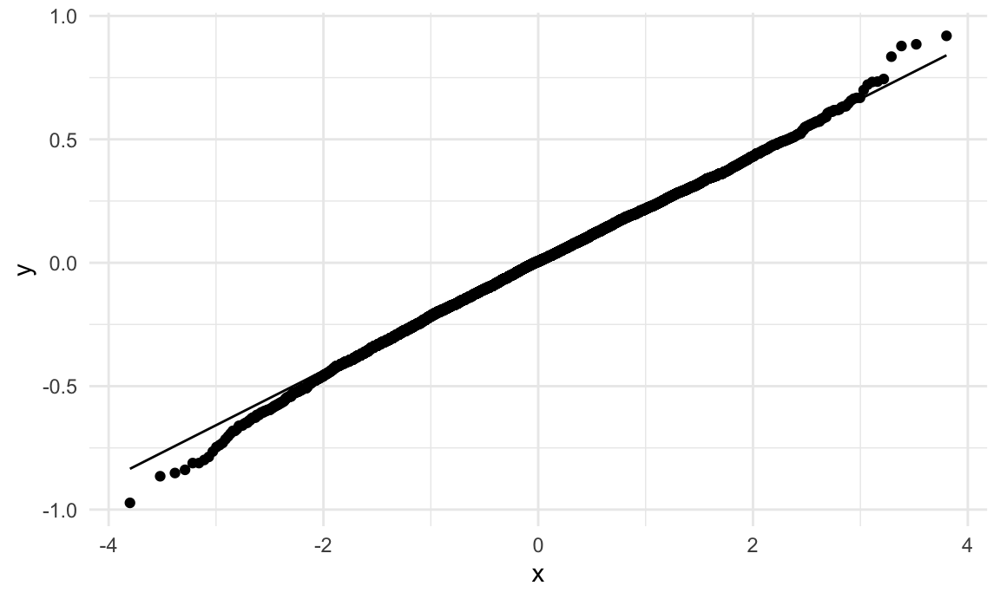
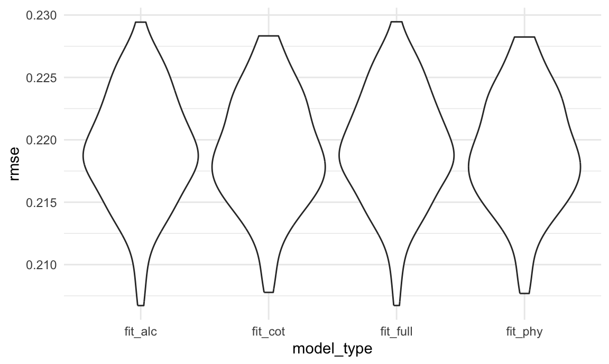

Check the dataset
model_df |>
ggplot(aes(x = cotinine, y = total_cholesterol)) + geom_point() +
labs(title = "Total_cholesterol against serum cotinine", x = "Serum cotinine (ng/ml)", y = "Total cholesterol (mg/dL)")

model_df |>
ggplot(aes(x = alcohol_use_cat, y = total_cholesterol)) + geom_point() +
labs(title = "Total_cholesterol against alcohol use", x = "Alcohol use", y = "Total cholesterol (mg/dL)")

model_df |>
ggplot(aes(x = physical_activity, y = total_cholesterol)) + geom_point() +
labs(title = "Total_cholesterol against physical_activity", x = "Physical activity", y = "Total cholesterol (mg/dL)")

model_df |>
ggplot(aes(x = total_cholesterol)) + geom_density() +
labs(title = "Destribution of total_cholesterol", x = "Total cholesterol (mg/dL)")

- Based on the scatterplot, we can find slightly negative linear
trends, but there is heteroscedasticity problem. Also, based on the
density plot, we can find that the distribution of y is asymmetry.
Therefore, we decide to use linear regression model with
log-transformation on response variable (y)
total_cholesterol for the following models.
Model selection
1. main explanatory variable: cotinine
Univariable linear regression: total_cholesterol = cotinine
fit_1 = lm(log(total_cholesterol) ~ cotinine, data = model_df)
fit_1 |>
broom::tidy() |>
knitr::kable(digits = 3)
| (Intercept) |
5.198 |
0.003 |
1944.859 |
0 |
| cotinine |
0.000 |
0.000 |
-3.776 |
0 |
model_df |>
modelr::add_residuals(fit_1) |>
ggplot(aes(sample = resid)) +
stat_qq() +
stat_qq_line()
- We can see that cotinine is significantly associated with total
cholesterol level. We also check the qq-plot and find that the residuals
followed a normal distribution, which indicates a suitability of using
linear regression.
- Therefore, we move forward to build multivariable regression.
Multivariable linear regression
fit_cot: log(total_cholesterol) = cotinine + age + gender + race +
marital_status + education_level_20 + poverty_level
fit_cot = lm(log(total_cholesterol) ~ cotinine + age + gender + race + marital_status + education_level_20 + poverty_level, data = model_df)
fit_cot |>
broom::tidy() |>
knitr::kable(digits = 3)
| (Intercept) |
5.221 |
0.015 |
354.487 |
0.000 |
| cotinine |
0.000 |
0.000 |
-0.192 |
0.847 |
| age |
0.000 |
0.000 |
1.297 |
0.195 |
| genderMale |
-0.045 |
0.006 |
-7.911 |
0.000 |
| raceNon-Hispanic Asian |
0.013 |
0.011 |
1.186 |
0.236 |
| raceNon-Hispanic Black |
-0.034 |
0.009 |
-3.899 |
0.000 |
| raceNon-Hispanic White |
-0.012 |
0.008 |
-1.463 |
0.144 |
| raceOther Race |
0.009 |
0.014 |
0.607 |
0.544 |
| marital_statusNever married |
-0.039 |
0.008 |
-4.903 |
0.000 |
| marital_statusWidowed/Divorced/Separated |
0.011 |
0.007 |
1.442 |
0.149 |
| education_level_20College graduate or above |
0.026 |
0.011 |
2.361 |
0.018 |
| education_level_20High school graduate/GED or
equivalent |
-0.005 |
0.010 |
-0.471 |
0.638 |
| education_level_20Less than 9th grade |
0.013 |
0.014 |
0.893 |
0.372 |
| education_level_20Some college or AA degree |
0.010 |
0.010 |
1.006 |
0.314 |
| poverty_levelBelow 130% of Poverty Guidelines |
-0.013 |
0.007 |
-1.811 |
0.070 |
| poverty_levelBetween 130% and 185% of Poverty
Guidelines |
-0.002 |
0.008 |
-0.214 |
0.831 |
2. main explanatory variable: physical_activity
Univariable linear regression: total_cholesterol =
physical_activity
fit_2 = lm(log(total_cholesterol) ~ physical_activity, data = model_df)
fit_2 |>
broom::tidy() |>
knitr::kable(digits = 3)
| (Intercept) |
5.197 |
0.005 |
1039.540 |
0.000 |
| physical_activityModerate activity |
0.004 |
0.007 |
0.599 |
0.549 |
| physical_activityVigorous activity |
-0.010 |
0.006 |
-1.570 |
0.117 |
model_df |>
modelr::add_residuals(fit_2) |>
ggplot(aes(sample = resid)) +
stat_qq() +
stat_qq_line()

- We can see that physical_activity is not significantly associated
with total cholesterol level. We also check the qq-plot and find that
the residuals followed a normal distribution, which indicates a
suitability of using linear regression.
- Therefore, we move forward to build multivariable regression.
Multivariable linear regression
fit_phy: log(total_cholesterol) = physical_activity + age + gender +
race + marital_status + education_level_20 + poverty_level
fit_phy = lm(log(total_cholesterol) ~ physical_activity + age + gender + race + marital_status + education_level_20 + poverty_level, data = model_df)
fit_phy |>
broom::tidy() |>
knitr::kable(digits = 3)
| (Intercept) |
5.212 |
0.016 |
323.926 |
0.000 |
| physical_activityModerate activity |
0.006 |
0.007 |
0.773 |
0.439 |
| physical_activityVigorous activity |
0.010 |
0.008 |
1.278 |
0.201 |
| age |
0.000 |
0.000 |
1.608 |
0.108 |
| genderMale |
-0.047 |
0.006 |
-8.062 |
0.000 |
| raceNon-Hispanic Asian |
0.013 |
0.011 |
1.229 |
0.219 |
| raceNon-Hispanic Black |
-0.034 |
0.009 |
-3.937 |
0.000 |
| raceNon-Hispanic White |
-0.012 |
0.008 |
-1.524 |
0.128 |
| raceOther Race |
0.008 |
0.014 |
0.528 |
0.597 |
| marital_statusNever married |
-0.039 |
0.008 |
-4.897 |
0.000 |
| marital_statusWidowed/Divorced/Separated |
0.010 |
0.007 |
1.409 |
0.159 |
| education_level_20College graduate or above |
0.025 |
0.011 |
2.315 |
0.021 |
| education_level_20High school graduate/GED or
equivalent |
-0.005 |
0.010 |
-0.515 |
0.607 |
| education_level_20Less than 9th grade |
0.013 |
0.014 |
0.909 |
0.364 |
| education_level_20Some college or AA degree |
0.010 |
0.010 |
0.971 |
0.332 |
| poverty_levelBelow 130% of Poverty Guidelines |
-0.012 |
0.007 |
-1.731 |
0.083 |
| poverty_levelBetween 130% and 185% of Poverty
Guidelines |
-0.001 |
0.008 |
-0.150 |
0.881 |
3. main explanatory variable: alcohol_use_cat
Univariable linear regression: total_cholesterol =
alcohol_use_cat
fit_3 = lm(log(total_cholesterol) ~ alcohol_use_cat, data = model_df)
fit_3 |>
broom::tidy() |>
knitr::kable(digits = 3)
| (Intercept) |
5.235 |
0.007 |
729.265 |
0 |
| alcohol_use_catLight Drinker |
-0.054 |
0.008 |
-6.703 |
0 |
| alcohol_use_catModerate Drinker |
-0.040 |
0.008 |
-4.732 |
0 |
model_df |>
modelr::add_residuals(fit_3) |>
ggplot(aes(sample = resid)) +
stat_qq() +
stat_qq_line()

- We can see that alcohol_use_cat is significantly associated with
total cholesterol level. We also check the qq-plot and find that the
residuals followed a normal distribution, which indicates a suitability
of using linear regression.
- Therefore, we move forward to build multivariable regression.
Multivariable linear regression
fit_alc: log(total_cholesterol) = alcohol_use_cat + age + gender +
race + marital_status + education_level_20 + poverty_level
fit_alc = lm(log(total_cholesterol) ~ alcohol_use_cat + age + gender + race + marital_status + education_level_20 + poverty_level, data = model_df)
fit_alc |>
broom::tidy() |>
knitr::kable(digits = 3)
| (Intercept) |
5.281 |
0.018 |
296.615 |
0.000 |
| alcohol_use_catLight Drinker |
-0.066 |
0.009 |
-7.277 |
0.000 |
| alcohol_use_catModerate Drinker |
-0.046 |
0.009 |
-4.884 |
0.000 |
| age |
0.000 |
0.000 |
1.045 |
0.296 |
| genderMale |
-0.056 |
0.006 |
-9.141 |
0.000 |
| raceNon-Hispanic Asian |
0.019 |
0.013 |
1.516 |
0.130 |
| raceNon-Hispanic Black |
-0.038 |
0.009 |
-4.099 |
0.000 |
| raceNon-Hispanic White |
-0.015 |
0.009 |
-1.734 |
0.083 |
| raceOther Race |
0.010 |
0.015 |
0.699 |
0.485 |
| marital_statusNever married |
-0.039 |
0.009 |
-4.587 |
0.000 |
| marital_statusWidowed/Divorced/Separated |
0.012 |
0.008 |
1.504 |
0.133 |
| education_level_20College graduate or above |
0.021 |
0.012 |
1.758 |
0.079 |
| education_level_20High school graduate/GED or
equivalent |
-0.009 |
0.011 |
-0.815 |
0.415 |
| education_level_20Less than 9th grade |
0.031 |
0.017 |
1.852 |
0.064 |
| education_level_20Some college or AA degree |
0.008 |
0.011 |
0.730 |
0.465 |
| poverty_levelBelow 130% of Poverty Guidelines |
-0.014 |
0.008 |
-1.881 |
0.060 |
| poverty_levelBetween 130% and 185% of Poverty
Guidelines |
0.002 |
0.009 |
0.277 |
0.782 |
4. explanatory variables: cotinine, physical_activity, and
alcohol_use_cat
fit_full: log(total_cholesterol) = cotinine + physical_activity +
alcohol_use_cat + age + gender + race + marital_status +
education_level_20 + poverty_level
fit_full = lm(log(total_cholesterol) ~ cotinine + physical_activity + alcohol_use_cat + age + gender + race + marital_status + education_level_20 + poverty_level, data = model_df)
fit_full |>
broom::tidy() |>
knitr::kable(digits = 3)
| (Intercept) |
5.277 |
0.019 |
272.405 |
0.000 |
| cotinine |
0.000 |
0.000 |
-0.350 |
0.727 |
| physical_activityModerate activity |
0.007 |
0.008 |
0.822 |
0.411 |
| physical_activityVigorous activity |
0.006 |
0.008 |
0.686 |
0.493 |
| alcohol_use_catLight Drinker |
-0.066 |
0.009 |
-7.220 |
0.000 |
| alcohol_use_catModerate Drinker |
-0.046 |
0.009 |
-4.889 |
0.000 |
| age |
0.000 |
0.000 |
1.070 |
0.285 |
| genderMale |
-0.056 |
0.006 |
-8.936 |
0.000 |
| raceNon-Hispanic Asian |
0.019 |
0.013 |
1.510 |
0.131 |
| raceNon-Hispanic Black |
-0.038 |
0.009 |
-4.008 |
0.000 |
| raceNon-Hispanic White |
-0.015 |
0.009 |
-1.678 |
0.093 |
| raceOther Race |
0.011 |
0.015 |
0.718 |
0.473 |
| marital_statusNever married |
-0.040 |
0.009 |
-4.601 |
0.000 |
| marital_statusWidowed/Divorced/Separated |
0.012 |
0.008 |
1.532 |
0.126 |
| education_level_20College graduate or above |
0.020 |
0.012 |
1.648 |
0.100 |
| education_level_20High school graduate/GED or
equivalent |
-0.010 |
0.011 |
-0.857 |
0.391 |
| education_level_20Less than 9th grade |
0.030 |
0.017 |
1.820 |
0.069 |
| education_level_20Some college or AA degree |
0.007 |
0.011 |
0.663 |
0.508 |
| poverty_levelBelow 130% of Poverty Guidelines |
-0.013 |
0.008 |
-1.778 |
0.075 |
| poverty_levelBetween 130% and 185% of Poverty
Guidelines |
0.003 |
0.009 |
0.338 |
0.735 |
5. Comparison among models: AIC (还没改)
fit_full = lm(log(total_cholesterol) ~ cotinine + physical_activity + alcohol_use_cat + age + gender + race + marital_status + education_level_20 + poverty_level, data = model_df)
test_aic = stepAIC(fit_full, direction = "both", trace = FALSE)
summary(test_aic)
##
## Call:
## lm(formula = log(total_cholesterol) ~ alcohol_use_cat + gender +
## race + marital_status + education_level_20 + poverty_level,
## data = model_df)
##
## Residuals:
## Min 1Q Median 3Q Max
## -0.98018 -0.14515 0.00187 0.14798 0.92464
##
## Coefficients:
## Estimate Std. Error
## (Intercept) 5.291661 0.014773
## alcohol_use_catLight Drinker -0.066035 0.009119
## alcohol_use_catModerate Drinker -0.046470 0.009319
## genderMale -0.055600 0.006121
## raceNon-Hispanic Asian 0.019256 0.012542
## raceNon-Hispanic Black -0.037329 0.009297
## raceNon-Hispanic White -0.013509 0.008446
## raceOther Race 0.010565 0.014961
## marital_statusNever married -0.042028 0.008227
## marital_statusWidowed/Divorced/Separated 0.013753 0.007551
## education_level_20College graduate or above 0.020305 0.011820
## education_level_20High school graduate/GED or equivalent -0.009487 0.011201
## education_level_20Less than 9th grade 0.031655 0.016478
## education_level_20Some college or AA degree 0.007220 0.010858
## poverty_levelBelow 130% of Poverty Guidelines -0.015045 0.007450
## poverty_levelBetween 130% and 185% of Poverty Guidelines 0.002317 0.008895
## t value Pr(>|t|)
## (Intercept) 358.207 < 2e-16 ***
## alcohol_use_catLight Drinker -7.242 5.06e-13 ***
## alcohol_use_catModerate Drinker -4.987 6.33e-07 ***
## genderMale -9.084 < 2e-16 ***
## raceNon-Hispanic Asian 1.535 0.1248
## raceNon-Hispanic Black -4.015 6.02e-05 ***
## raceNon-Hispanic White -1.599 0.1098
## raceOther Race 0.706 0.4801
## marital_statusNever married -5.109 3.35e-07 ***
## marital_statusWidowed/Divorced/Separated 1.821 0.0686 .
## education_level_20College graduate or above 1.718 0.0859 .
## education_level_20High school graduate/GED or equivalent -0.847 0.3971
## education_level_20Less than 9th grade 1.921 0.0548 .
## education_level_20Some college or AA degree 0.665 0.5061
## poverty_levelBelow 130% of Poverty Guidelines -2.019 0.0435 *
## poverty_levelBetween 130% and 185% of Poverty Guidelines 0.260 0.7945
## ---
## Signif. codes: 0 '***' 0.001 '**' 0.01 '*' 0.05 '.' 0.1 ' ' 1
##
## Residual standard error: 0.2188 on 5393 degrees of freedom
## (2752 observations deleted due to missingness)
## Multiple R-squared: 0.04106, Adjusted R-squared: 0.0384
## F-statistic: 15.4 on 15 and 5393 DF, p-value: < 2.2e-16
# AIC result: log(total_cholesterol) ~ alcohol_use_cat + gender + race + marital_status + education_level_20 + poverty_level
- Based on the output, we can find the best model optimized by
comparing AIC value is
log(total_cholesterol) = alcohol_use_cat + gender + race + marital_status + education_level_20 + poverty_level.
However, we think variable age is an essential variable when studying
health outcome, such as total cholesterol in this study. Therefore, we
decide to add variable age into this model, and summary the final model
for comparing is
log(total_cholesterol) = alcohol_use_cat + age + gender + race + marital_status + education_level_20 + poverty_level,
which is the same as model fit_alc.
6. Backwawrd selection on full model
fit_backward = step(fit_full, direction = "backward")
## Start: AIC=-16415.57
## log(total_cholesterol) ~ cotinine + physical_activity + alcohol_use_cat +
## age + gender + race + marital_status + education_level_20 +
## poverty_level
##
## Df Sum of Sq RSS AIC
## - physical_activity 2 0.0350 258.19 -16419
## - cotinine 1 0.0059 258.16 -16417
## - age 1 0.0548 258.21 -16416
## <none> 258.16 -16416
## - poverty_level 2 0.2038 258.36 -16415
## - education_level_20 4 0.6827 258.84 -16409
## - marital_status 2 1.3044 259.46 -16392
## - race 4 1.5203 259.68 -16392
## - alcohol_use_cat 2 2.5173 260.67 -16367
## - gender 1 3.8255 261.98 -16338
##
## Step: AIC=-16418.83
## log(total_cholesterol) ~ cotinine + alcohol_use_cat + age + gender +
## race + marital_status + education_level_20 + poverty_level
##
## Df Sum of Sq RSS AIC
## - cotinine 1 0.0067 258.20 -16421
## - age 1 0.0485 258.24 -16420
## <none> 258.19 -16419
## - poverty_level 2 0.2075 258.40 -16418
## - education_level_20 4 0.6884 258.88 -16412
## - marital_status 2 1.2950 259.49 -16396
## - race 4 1.5302 259.72 -16395
## - alcohol_use_cat 2 2.5655 260.76 -16369
## - gender 1 3.9007 262.09 -16340
##
## Step: AIC=-16420.69
## log(total_cholesterol) ~ alcohol_use_cat + age + gender + race +
## marital_status + education_level_20 + poverty_level
##
## Df Sum of Sq RSS AIC
## - age 1 0.0523 258.25 -16422
## <none> 258.20 -16421
## - poverty_level 2 0.2172 258.42 -16420
## - education_level_20 4 0.7140 258.91 -16414
## - marital_status 2 1.2913 259.49 -16398
## - race 4 1.5580 259.75 -16396
## - alcohol_use_cat 2 2.5598 260.76 -16371
## - gender 1 4.0009 262.20 -16340
##
## Step: AIC=-16421.6
## log(total_cholesterol) ~ alcohol_use_cat + gender + race + marital_status +
## education_level_20 + poverty_level
##
## Df Sum of Sq RSS AIC
## <none> 258.25 -16422
## - poverty_level 2 0.2465 258.50 -16420
## - education_level_20 4 0.7266 258.98 -16414
## - race 4 1.5164 259.77 -16398
## - marital_status 2 1.8116 260.06 -16388
## - alcohol_use_cat 2 2.5279 260.78 -16373
## - gender 1 3.9513 262.20 -16342
# backward result: log(total_cholesterol) ~ alcohol_use_cat + gender + race + marital_status + education_level_20 + poverty_level
- Based on the output, we can find the best model optimized by
backward selection summary for full model with log transfermation on y
is
log(total_cholesterol) = alcohol_use_cat + gender + race + marital_status + education_level_20 + poverty_level.
However, we think variable age is an essential variable when studying
health outcome, such as total cholesterol in this study. Therefore, we
decide to add variable age into this model, and summary the final model
for comparing is
log(total_cholesterol) = alcohol_use_cat + age + gender + race + marital_status + education_level_20 + poverty_level,
which is the same as model fit_alc.
7. Stepwise selection on full model
fit_stepwise = step(fit_full)
## Start: AIC=-16415.57
## log(total_cholesterol) ~ cotinine + physical_activity + alcohol_use_cat +
## age + gender + race + marital_status + education_level_20 +
## poverty_level
##
## Df Sum of Sq RSS AIC
## - physical_activity 2 0.0350 258.19 -16419
## - cotinine 1 0.0059 258.16 -16417
## - age 1 0.0548 258.21 -16416
## <none> 258.16 -16416
## - poverty_level 2 0.2038 258.36 -16415
## - education_level_20 4 0.6827 258.84 -16409
## - marital_status 2 1.3044 259.46 -16392
## - race 4 1.5203 259.68 -16392
## - alcohol_use_cat 2 2.5173 260.67 -16367
## - gender 1 3.8255 261.98 -16338
##
## Step: AIC=-16418.83
## log(total_cholesterol) ~ cotinine + alcohol_use_cat + age + gender +
## race + marital_status + education_level_20 + poverty_level
##
## Df Sum of Sq RSS AIC
## - cotinine 1 0.0067 258.20 -16421
## - age 1 0.0485 258.24 -16420
## <none> 258.19 -16419
## - poverty_level 2 0.2075 258.40 -16418
## - education_level_20 4 0.6884 258.88 -16412
## - marital_status 2 1.2950 259.49 -16396
## - race 4 1.5302 259.72 -16395
## - alcohol_use_cat 2 2.5655 260.76 -16369
## - gender 1 3.9007 262.09 -16340
##
## Step: AIC=-16420.69
## log(total_cholesterol) ~ alcohol_use_cat + age + gender + race +
## marital_status + education_level_20 + poverty_level
##
## Df Sum of Sq RSS AIC
## - age 1 0.0523 258.25 -16422
## <none> 258.20 -16421
## - poverty_level 2 0.2172 258.42 -16420
## - education_level_20 4 0.7140 258.91 -16414
## - marital_status 2 1.2913 259.49 -16398
## - race 4 1.5580 259.75 -16396
## - alcohol_use_cat 2 2.5598 260.76 -16371
## - gender 1 4.0009 262.20 -16340
##
## Step: AIC=-16421.6
## log(total_cholesterol) ~ alcohol_use_cat + gender + race + marital_status +
## education_level_20 + poverty_level
##
## Df Sum of Sq RSS AIC
## <none> 258.25 -16422
## - poverty_level 2 0.2465 258.50 -16420
## - education_level_20 4 0.7266 258.98 -16414
## - race 4 1.5164 259.77 -16398
## - marital_status 2 1.8116 260.06 -16388
## - alcohol_use_cat 2 2.5279 260.78 -16373
## - gender 1 3.9513 262.20 -16342
# stepwise result: log(total_cholesterol) ~ alcohol_use_cat + gender + race + marital_status + education_level_20 + poverty_level
- Based on the output, we can find the best model optimized by
stepwise selection summary for full model with log transfermation on y
is
log(total_cholesterol) = alcohol_use_cat + gender + race + marital_status + education_level_20 + poverty_level.
However, we think variable age is an essential variable when studying
health outcome, such as total cholesterol in this study. Therefore, we
decide to add variable age into this model, and summary the final model
for comparing is
log(total_cholesterol) = alcohol_use_cat + age + gender + race + marital_status + education_level_20 + poverty_level,
which is the same as model fit_alc.
8. Comparison among models: cross validation
Based on the above steps, we now are comparing four models: fit_cot,
fit_phy, fit_alc, and fit_full.
model_cv_df =
model_df |>
mutate(
physical_activity = ifelse(physical_activity == "Light/Unknown activity", 0, ifelse(physical_activity == "Moderate activity", 1, 2)),
alcohol_use_cat = ifelse(alcohol_use_cat == "Light Drinker", 0, ifelse(alcohol_use_cat == "Moderate Drinker", 1, 2))
)
# create training and testing sets
cv_df =
model_cv_df |>
crossv_mc(n = 100) |>
mutate(
train = map(train, as_tibble),
test = map(test, as_tibble)
)
cv_results =
cv_df |>
mutate(
fit_cot = map(train, \(df) lm(log(total_cholesterol) ~ cotinine + age + gender + race + marital_status + education_level_20 + poverty_level, data = df)),
fit_phy = map(train, \(df) lm(log(total_cholesterol) ~ physical_activity + age + gender + race + marital_status + education_level_20 + poverty_level, data = df)),
fit_alc = map(train, \(df) lm(log(total_cholesterol) ~ alcohol_use_cat + age + gender + race + marital_status + education_level_20 + poverty_level, data = df)),
fit_full = map(train, \(df) lm(log(total_cholesterol) ~ cotinine + physical_activity + alcohol_use_cat + age + gender + race + marital_status + education_level_20 + poverty_level, data = df))
) |>
mutate(
rmse_fit_cot = map2_dbl(fit_cot, test, \(model, df) rmse(model, df)),
rmse_fit_phy = map2_dbl(fit_phy, test, \(model, df) rmse(model, df)),
rmse_fit_alc = map2_dbl(fit_alc, test, \(model, df) rmse(model, df)),
rmse_fit_full = map2_dbl(fit_full, test, \(model, df) rmse(model, df))
)
cv_results |>
dplyr::select(starts_with("rmse")) |>
pivot_longer(
everything(),
names_to = "model_type",
values_to = "rmse",
names_prefix = "rmse_"
) |>
ggplot(aes(x = model_type, y = rmse)) + geom_violin()

- Based on the violin plot, these four models have similar spread of
rmses.
6. Comparison among models: r square
rsquare_fit_cot = rsquare(fit_cot, data = model_df)
rsquare_fit_phy = rsquare(fit_phy, data = model_df)
rsquare_fit_alc = rsquare(fit_alc, data = model_df)
rsquare_fit_full = rsquare(fit_full, data = model_df)
cbind(rsquare_fit_cot, rsquare_fit_phy, rsquare_fit_alc, rsquare_fit_full) |>
knitr::kable()
| 0.0280454 |
0.0282958 |
0.0287445 |
0.0289015 |
- Based on the violin plot, these four models have similar r square
values.
Conclusion
Based on the above model selection steps, we decide to use model
fit_alc: lm(log(total_cholesterol) = alcohol_use_cat + age + gender + race + marital_status + education_level_20 + poverty_level
as our final model.
- Backward, stepwise, AIC value methods all indicate that
fit_alc is the best.
- With similar rmse distribution and r square, model
fit_alc is less complex than model
fit_full.
- Then, we save this model as a RDS file for the following R shiny
part.
save_path = "fit_alc.rds"
saveRDS(fit_alc, save_path)
cat("Model saved as an RDS file:", save_path, "\n")
## Model saved as an RDS file: fit_alc.rds